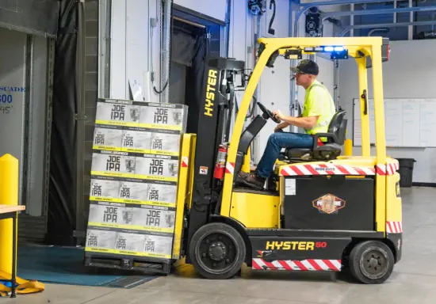

kurz vysokozdvižný vozík
V rámci školení VZV pořádáme kurzy VZV, kde se zájemci učí pracovat se speciálními stroji. Náš kurz vysokozdvižný vozík patří mezi nejlépe hodnocené.
Typy školení v rámci kurzu VZV
Naši zkušení lektoři provádí školení s ohledem na individuální přístup ke každému zájemci, a proto jsme kurz VZV rozdělili do tří následujících typů:
Základní kurz
Tento kurz VZV je určen pro osoby, které nevlastnily ani nevlastní řidičské oprávnění na vysokozdvižný vozík. Zájemci se v kurzu naučí, jak bezpečně ovládat manipulační vozík, přičemž klademe důraz na praxi. Úspěšný uchazeč kurzu VZV obdrží platný průkaz dokládající jeho kvalifikaci.
Opakované školení
Je dané ze zákona, neboť platnost průkazu činí jeden rok a po uplynutí této doby je potřeba řidičské oprávnění obnovit. Kurz VZV pro opakované školení vychází z normy ČSN 268805 tak, aby byly zajištěny kontinuální schopnosti obsluhy vysokozdvižných vozíků.
Rozšiřovací školení
V rámci našich kurzů VZV provádíme i rozšiřovací školení. Zájemce si tak může rozšířit dosavadní průkaz například ze skupin do 5t na skupiny nad 5t. Mezi uchazeči je o tento kurz VZV mimořádný zájem, protože sami řidiči si uvědomují, že čím budou flexibilnější, tím snáz naleznou pracovní uplatnění.
Podmínky pro kurz „Vysokozdvižný vozík“
K tomu, aby mohl člověk nastoupit na kurz „Vysokozdvižný vozík“, musí splnit několik podmínek. V prvé řadě musí být takové osobě nejpozději v den konání kurzu 18 let a musí být zdravotně způsobilá (obvykle ověřuje praktický lékař). Vedle lékařského vyjádření se k žádosti o kurz vysokozdvižný vozík připojuje vyplněná přihláška a také fotografie pasového formátu.
Skupiny vysokozdvižných vozíků
třída – Elektrické vozíky
třída – Vozíky se spalovacím motorem
Přehled všech vozíků používaných v České republice
- A – Plošinové, nízkozdvižné, tažné a tlačné ručně vedené
- B – Plošinové, nízkozdvižné, tažné a tlačné s pákovým řízením
- C – Plošinové, nízkozdvižné, tažné a tlačné s volantovým řízením
- D – Vysokozdvižné ručně vedené
- E – Vysokozdvižné s pákovým řízením
- W1 – Vysokozdvižné vozíky s volantovým řízením a s nosností pod 5 tun
- W2 – Vysokozdvižné vozíky s volantovým řízením a s nosností nad 5 tun
- G – Vysokozdvižné se zdvihací plošinou
- Z – Zvláštní vozíky
Na konkrétní typ vozíků potom potřebuje žadatel konkrétní oprávnění.
Typy školení v rámci kurzu VZV
Ačkoliv v ČR neexistuje žádný studijní obor VZV, kurzy vysokozdvižného vozíku se řídí řadou platných norem, přičemž mezi ty nejstěžejnější patří :
- § 262/2006
- § 309/2006
- N. V. 168/2002
- § 361/2000
- § 361/2007
- EN 3691+Amd1
- ČSN 268805
- a nově § 365/2011
Asi nejdůležitější z vybraných norem a zákonů je §134b Zákoníků práce, který vyžaduje ve svých pracovně bezpečnostních předpisech, aby byli prací s vozíky pověřováni pouze kvalifikovaní řidiči s odpovídajícím dokladem o vyškolení.
Fotogalerie
- 